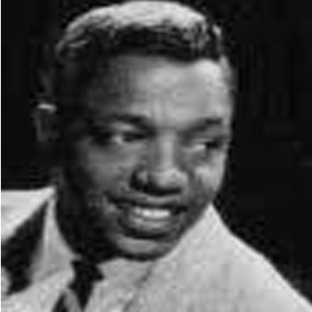

Exit Eddie Kendricks and Paul Williams
Paul Williams, who suffered from sickle-cell disease, fell into depression because of the stress of touring and personal issues. By the late 1960s, he had developed a serious case of alcoholism.[16] As his physical and mental health began to decline sharply, it made performing more and more difficult. Williams began traveling with oxygen tanks, and the other four Temptations made valiant efforts to raid and drain his alcohol stashes.
By 1969, Richard Street, lead singer of Motown act The Monitors and a former Distant, was touring with the group as a backup replacement for Williams. For most shows, save for his solo numbers, Williams would dance and lip-sync onstage to parts sung live by Street into an offstage mic behind a curtain. At other shows, and during most of the second half of 1970, Street substituted for Williams onstage.
Eddie Kendricks became detached from the group after David Ruffin's firing and as the health of Paul Williams continued to fail. Kendricks began regularly fighting with Otis Williams and Melvin Franklin over leadership of the group. In addition, Kendricks preferred the ballad material from the earlier days and was uncomfortable with the psychedelic soul material the group was now performing. As a result, Kendricks rekindled his friendship with Ruffin, who persuaded him to quit the Temptations and go solo. After a November 1970 Copacabana engagement, another confrontation between him, Otis Williams, and Franklin caused Kendricks to walk out in-between shows and not return. Both Kendricks and Williams then agreed that Kendricks would be leaving the group. Kendricks later stated that he actually considered leaving as early as 1965, but remained with the Temptations and unsuccessfully attempted to get permission to record a solo album without leaving the group.
Before Kendricks officially left the Temptations, he and Paul Williams recorded the lead vocals for "Just My Imagination (Running Away with Me)", a ballad that became Kendricks' final single with the group. Included on the Sky's the Limit LP along with the original album version of "Smiling Faces Sometimes", "Just My Imagination" was released as a single in January 1971, and the song began steadily climbing the U.S. pop singles chart, peaking at #1 two months later. By the time "Just My Imagination" topped the charts, Kendricks had negotiated his release from the group and signed a solo deal with Motown's Tamla label.
The Temptations originally hired Ricky Owens, from the Los Angeles-based vocal group the Vibrations, to replace Kendricks. However, Owens only played two dates with the group before he was fired for forgetting the words to his solo numbers.For several weeks of the spring of 1971, the Temptations were without a fifth member. Owens meanwhile returned to the Vibrations and died in Los Angeles, California on December 6, 1996 at the age of 57.
Whitfield took the remaining Temptations quartet and re-recorded "It's Summer", the B-side to "Ball of Confusion (That's What the World Is Today)", as a replacement single. "Smiling Faces Sometimes" was released as a single for The Undisputed Truth instead, becoming a Top 5 hit on the Billboard Hot 100 in 1971. Meanwhile, "It's Summer" peaked at #51 on the Billboard Hot 100, making it the first Temptations single to miss the Top 40 since "Farewell My Love" eight years earlier.
After declaring a few weeks later that he was unable to continue performing due to medical reasons, Paul Williams quit the Temptations in May. Richard Street officially took Williams' place, although Williams remained on the group's payroll as an adviser and choreographer. After Williams had recovered enough to record again, he recorded two sides for a debut solo single. However, on August 17, 1973, Williams died in Detroit at the age of 34, his death ruled a suicide by the Wayne County coroner.